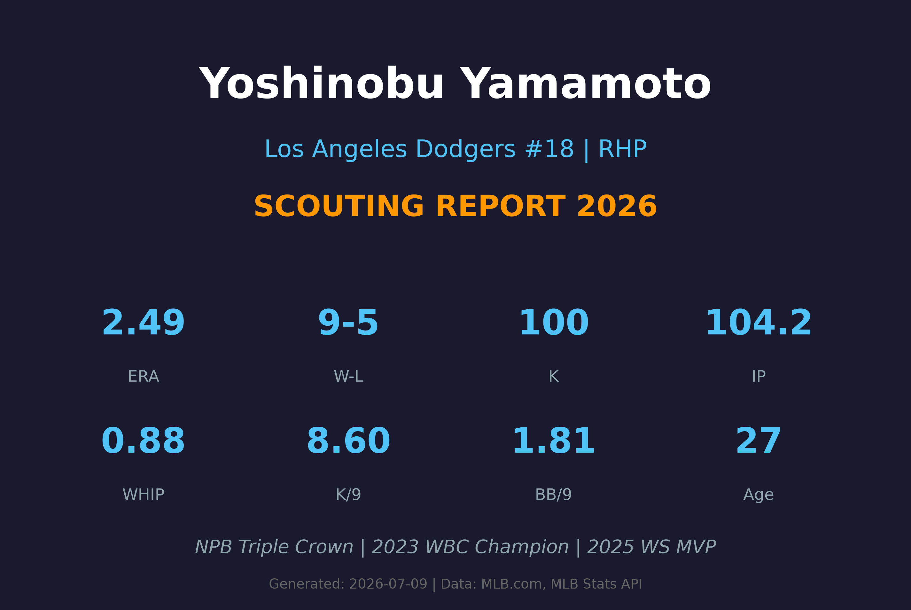
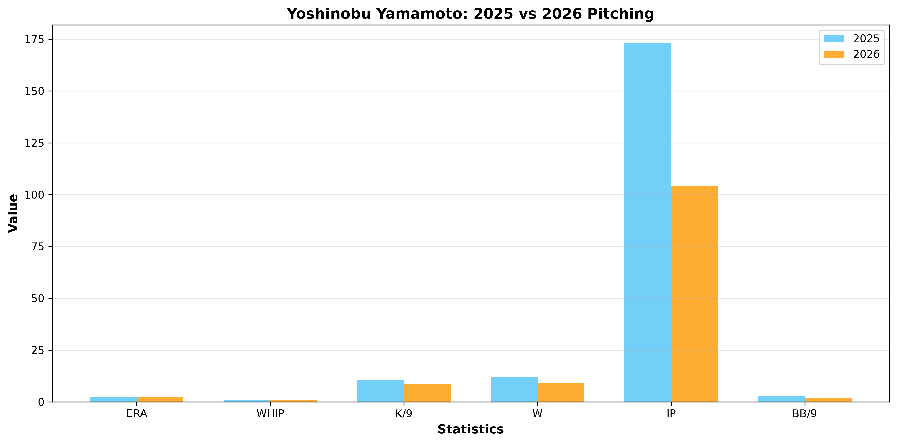
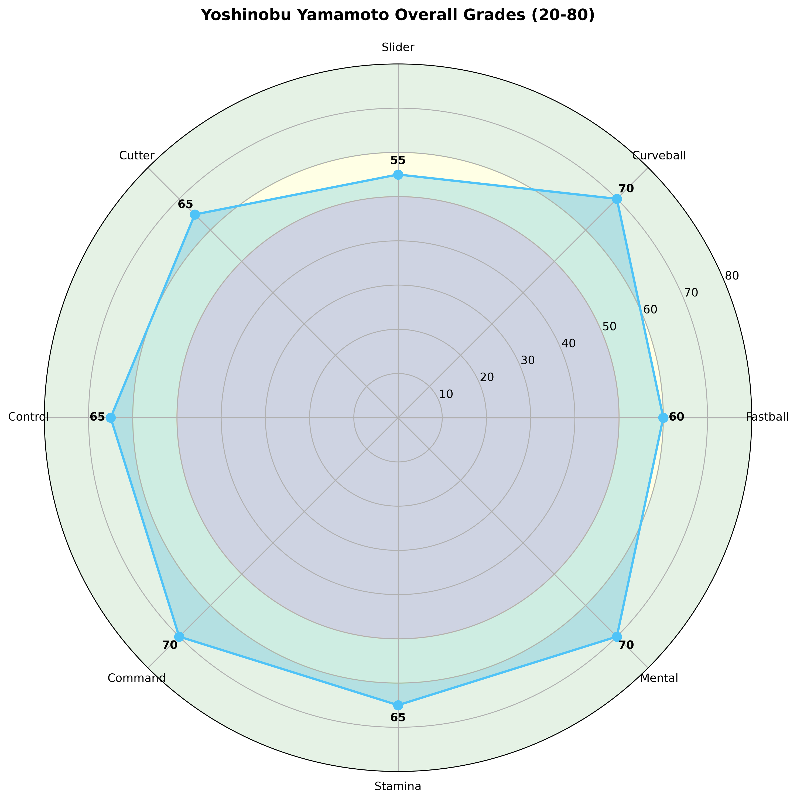

Los Angeles Dodgers #18 | RHP | 日本王牌投手

山本由伸是日本职棒近年来最具统治力的投手之一，也是MLB历史上签约金最高的日本投手（12年3.25亿美元）。他以精准的控球和多样化的变化球闻名，连续三届日本职棒太平洋联盟MVP和投手三冠王。
2024年加入洛杉矶道奇队，首个赛季即随队夺得世界大赛冠军。2025年更是大爆发，不仅成为世界大赛MVP，还获得Babe Ruth Award（季后赛MVP），并入选All-MLB First Team。
身高仅5'10"（178cm），体重176磅，身材并不突出，但凭借顶级的投球技术和心理素质，成为道奇队轮值的核心投手。

| 赛季 | GS | W-L | ERA | IP | K | BB | WHIP | K/9 | H/9 |
|---|---|---|---|---|---|---|---|---|---|
| 2025 | 30 | 12-8 | 2.49 | 173.2 | 201 | 59 | 0.99 | 10.42 | 5.86 |
| 2026 | 16 | 9-5 | 2.49 | 104.2 | 100 | 21 | 0.88 | 8.60 | 6.11 |
93-96 mph
山本的速球虽然速度不算顶级，但精准度极高。他的控球能力使得速球成为设置其他球种的基础。速球位于好球带边缘，迫使打者挥击不佳。
B+ 评分
72-76 mph
山本的招牌武器之一。曲球下坠幅度极大，旋转效率极高，是他在日本职棒时期获得三振的主要武器。MLB时期曲球品质持续提升，成为他解决关键出局数的首选。
A- 评分
84-88 mph
介于滑球和卡特球之间的横向变化球。对右打者极具威胁，能够制造大量挥空和弱接触。与曲球搭配使用时效果显著，打者难以辨别球种。
B+ 评分
88-91 mph
球速较快但带有明显下坠的变化球。与速球的速度相近，形成欺骗性的速差。这是山本在MLB开发的重要武器，能够有效应对强力打者。
B+ 评分
山本采用四分之三（Three-Quarter）的投球机制，出手点略低于肩高。虽然身高只有5'10"（178cm），但他的投球机制极为紧凑高效，能够充分利用身体旋转产生力量。投球动作重复性极高，这是他能够精准控球的基础。
山本最大的武器是精准控球。2025年BB/9仅为3.06，2026年更是降至1.81，显示他在MLB适应后控球能力进一步提升。他能够将四球种精准地投到好球带边缘，迫使打者击出不佳。这是他与多数日本投手最大的区别——他不仅依靠球速，更依靠精准度和变化球品质。
速球平均约94mph，最高可达96-97mph。虽然速度不如Sasaki或Glasnow等火球手，但山本的速球旋转效率极高，上旋效应明显，使得打者看到的球速比实际更快。加上精准的控球，他的速球实际效果远超速度数字本身。

赛扬奖级别先发投手，道奇队王牌候选
A 级 / 王牌投手级别
山本由伸是道奇队未来5-10年轮值的核心基石。2025年世界大赛MVP的表现已经证明了他能在最高舞台发挥顶级水平。2026年虽然三振率有所下降，但WHIP和BB/9持续改善，显示他的控球和成熟度在不断提升。
2026-2027：道奇队轮值前段投手，ERA目标2.50以下，入选全明星，挑战赛扬奖
2028-2029：道奇队王牌投手，赛扬奖竞争者，每季200+局，30+胜场合计
2030+：维持顶级表现，成为道奇队传奇投手之一，名人堂候选
山本由伸出生于日本冈山县备前市，一个仅有约3.2万人口的小城市。他是MLB历史上唯一出生于备前市的球员。他的名字结合了父母名字中的汉字。山本有一个妹妹，在日本担任英语教师。
2017年日本职棒选秀中，山本由伸在第4轮被欧力士野牛队（Orix Buffaloes）选中。2017年8月20日，年仅19岁的他完成日本职棒首秀。随后的几年，他迅速成长为日本职棒最具统治力的投手。
2019-2023年，山本连续统治日本职棒太平洋联盟：
2020东京奥运会：山本代表日本队参赛，带领球队夺得金牌。他被评为All-Olympic Team成员，在两场比赛中送出18次三振，ERA 1.59。
2023世界棒球经典赛（WBC）：山本作为日本国家队王牌投手，帮助球队夺得WBC冠军。他在对阵墨西哥的半决赛中展现了顶级表现，是日本队夺冠的关键功臣。
2024年：山本与道奇队签下12年3.25亿美元的历史级合约，成为MLB史上签约金最高的日本投手。MLB首秀在韩国首尔对阵教士队，但仅投1局失5分。不过随后迅速调整，整个赛季7胜2败，ERA 3.00，随队夺得世界大赛冠军。2024年6月因右肩袖拉伤进入伤病名单，但季后赛及时复出。
2025年：大爆发之年。常规赛季12胜8败，ERA 2.49，201次三振，入选All-MLB First Team，NL赛扬奖第三。但真正的传奇在季后赛：
山本由伸以独特的训练方式闻名。他长期接受矢田治（Yada Sensei）的指导，这位生化专家/训练师帮助他开发了独特的训练体系。其中最著名的训练项目是投掷标枪（Javelin），这项训练帮助他增强肩臂力量和投球机制。在MLB球员中，这种训练方式极为罕见，但山本坚持认为这是他保持巅峰状态的关键。
山本在日本职棒和MLB都穿着18号球衣。在日本棒球文化中，18号传统上是王牌投手（Ace）的背号。从铃木一朗（18号）到松坂大辅（18号），再到田中将大（18号），这个号码代表着日本投手的最高荣誉。山本继承了这个传统，并在道奇队延续了这一精神。